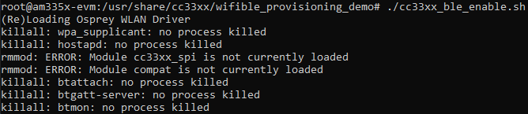
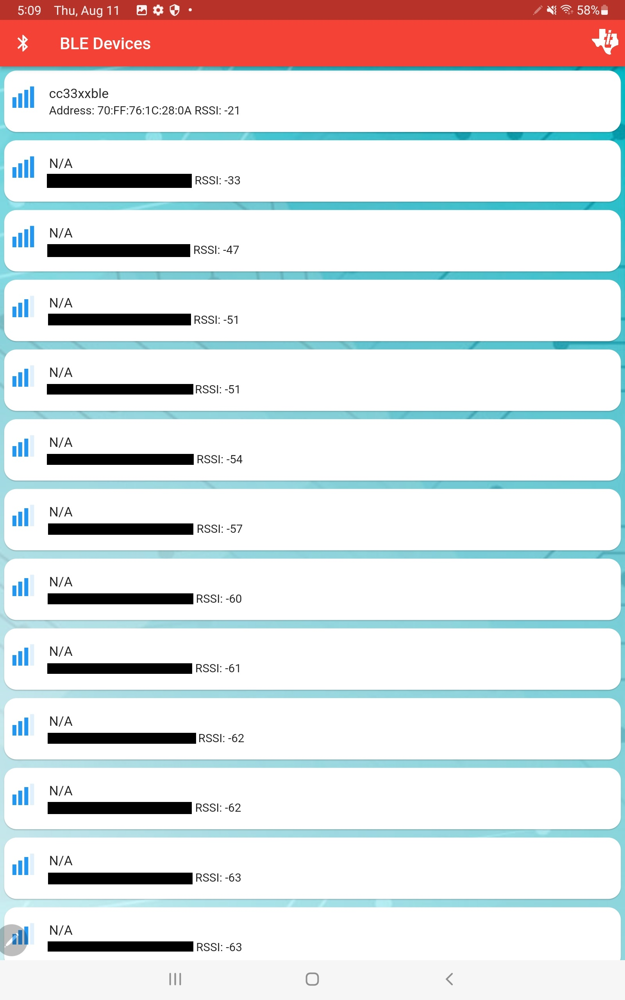

Wi-Fi Provisioning over BLE¶
Overview
TI developed a demo to demonstrate how the BLE functionality of the CC33xx can be used to provision it to a Wi-Fi AP of the user’s choice. This works by passing the Wi-Fi AP credentials to the CC33xx via BLE using a phone or a similar device.
A high-level diagram of the process is shown below:
{kind=link}
Provisioning Block Diagram.
The provisioning sequence is shown below where a user scans for BLE devices, connects to the CC33xx BLE peripheral and passes the Wi-Fi credentials.
{kind=link}
Provisioning Sequence.
How to run Wi-Fi Provisioning Demo
Set up the CC33xx as explained in CC33xx Evaluation Hardware and CC33xx Software Download and Installation
Install the demo Android Application (APK) on an Android device. This APK is included in a separate toolbox installer
Connect the Ethernet cable to the RJ-45 jack located on BeagleBone Black. Connect the other end of the cable to a router or Ethernet switch. Check BeagleBone Black’s IP address on ethernet interface. In case IP address is not assigned automatically, assign a static IP address or use DHCP to get an IP address.
udhcpc -i eth0
Open two SSH terminals to the BeagleBone Black as the demo consists of two scripts running in parallel (BeagleBone IP comes from your PC)
ssh root@<beaglebone_ip>
Navigate both terminals to the following directory
cd /usr/share/cc33xx/wifible_provisioning_demoOn one terminal, execute the BLE provisioning script:
./provisioning_start_ble.sh
Note
It is very likely that this script will print errors, but that does not mean the program is unsuccessful. See an image below of the common errors. These errors mean that the expected programs were not previously running. Please wait a few extra seconds to see the cc33xx driver reload and BLE GATT server starting.
Expected output of cc33xx_ble_enable.sh
On the other terminal, run the Wi-Fi provisioning script
./provisioning_start_wlan.sh
Launch the demo Android App and scan for BLE devices
Connect to the CC33xx BLE device. It is advertised as cc33xxble
BLE scanning for cc33xxble.
Enter the Wi-Fi credentials and press Send
Note
Current version limitation: Please make sure the total length of SSID (network name) and Password is not more than 19 characters.
Finally, the Android app will print “Device connected” similar to below indicating that the Android device successfully connected to the CC33xx transceiver.
{kind=link}
{kind=link}
{kind=link}
Successful BLE connection and transmission.